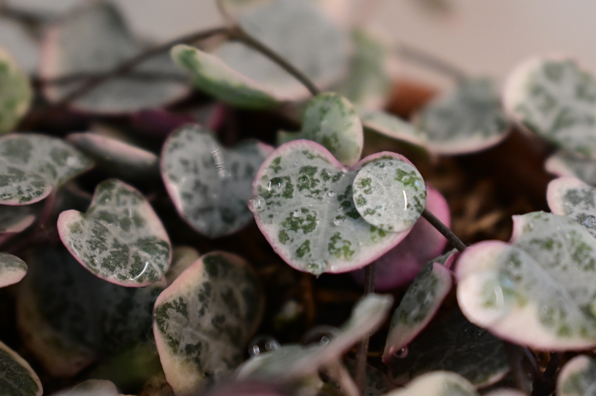
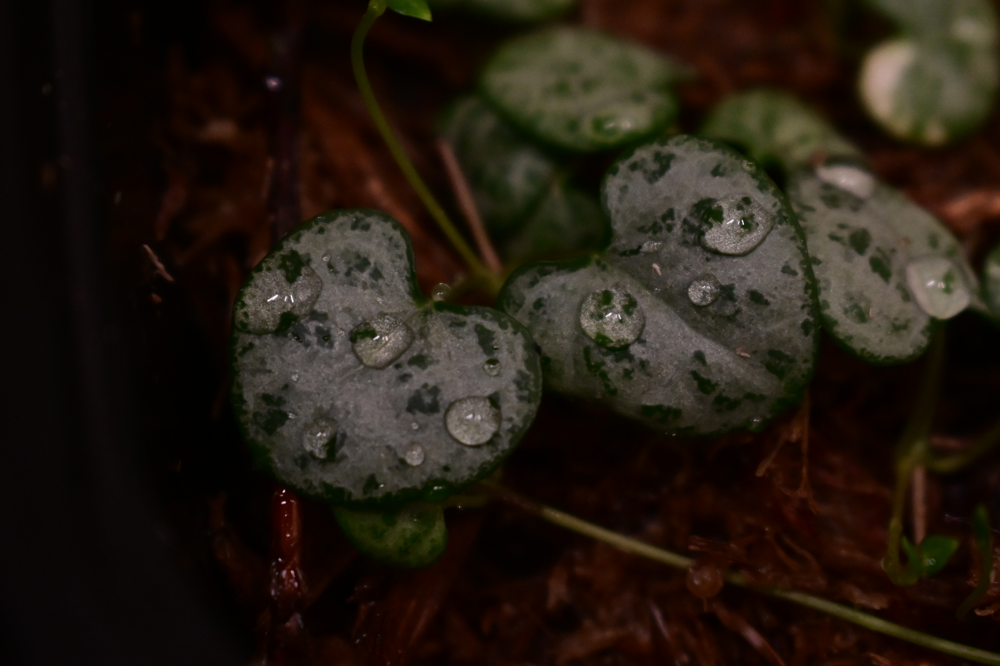
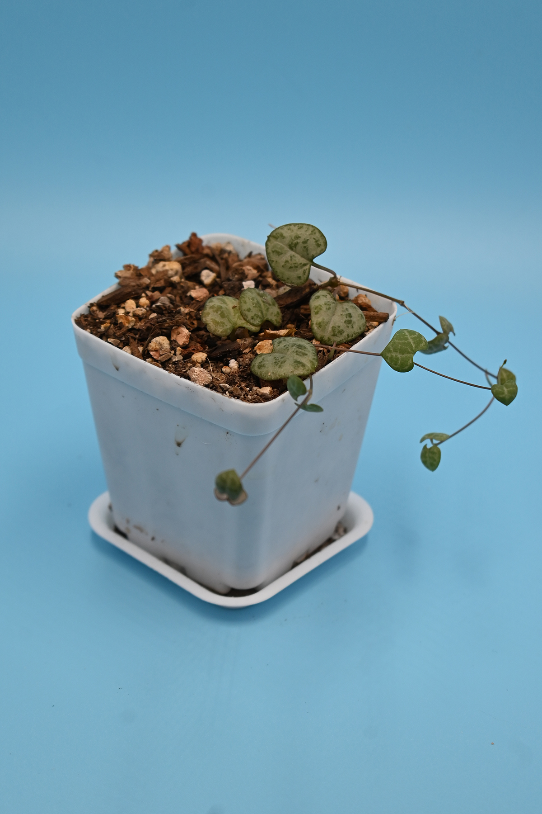

STRING OF HEARTS
What is the plant and what are the key benefits to people and/or the environment?
Ceropegia Woodii (string of hearts) is a trendy household plant that originates in South Africa.
Its most common varieties are the general string of hearts (SOH), Silver Glory, and variegated string of hearts (VSOH).It is non-toxic to humans, dogs, and cats, making it safe for plant owners with young children and pets. Some benefits it provides for new and experienced collectors include fast growth, minimal care, and its ornamental-ness. It also works well for smaller homes since it is a vining plant that can be hung from a windowsill. It also helps purify air. 
Are there any threats or challenges facing this plant and its continued survival?
String of hearts tends to suffer most as a houseplant rather than in its natural habitats. Although this plant is mostly resistant pests, it is susceptible to mealy bugs. Therefore, it is crucial to be on the lookout of any signs that there is an infestation. Additionally, it is very prone to overwatering. Given that string of hearts is a semi-succulent, it prefers drier conditions than wet ones. When it is not potted in well draining, aerated soil, it is very easy to over-water it and cause root rot. Due to its thin roots, it is best to either avoid chemically fertilizing string of hearts, or doing so scarcely to avoid root burn.
What role does this plant play in larger environmental, social and/or business aspects?
Overall, string of hearts is a strong business prospect for plant nurseries and stores. It has been considered a “trendy” plant recently, making it popular year-round. Although it is starting to be more available for purchase, the price of string of hearts remains high, allowing nurseries and stores to make more profit. It could also be more heavily marketed around Valentine's Day as the perfect gift for the plant lover in your life (romantically or platonically).
BIBLIOGRAPHY
- “Ceropegia Woodii (String of Hearts / Rosary Vine).” Our House Plants, https://www.ourhouseplants.com/plants/string-of-hearts-ceropegia-woodii.
- “Everything You Need to Know About String of Hearts.” Planet Desert, Planet Desert, 21 Oct. 2022, https://planetdesert.com/blogs/news/everything-you-need-to-know-about-string-of-hearts.
- “How to Care for String of Hearts.” My Little Jungle, https://mylittlejungle.com/string-of-hearts/.